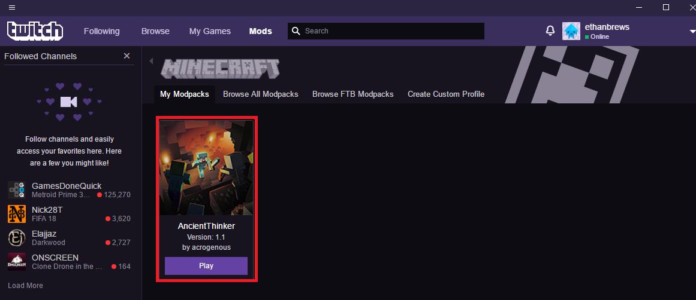

Step 1
Download the twitch launcher from here.
Step 2
Download the modpack from here.
Step 3
Click on the 'mods' tab in the twitch launcher then select 'Minecraft'

Step 4
Click on the 'mods' tab in the twitch launcher then select 'Minecraft'

Step 5
Click on the 'Minecraft' tile

Step 6
Click on the 'Create custom profile' tab then select the ZIP file downloaded in step 2

Step 7
The modpack will download all of the mods from curse, you will then be able to launch the modpack.
Joining the Server
The server IP address will be available from the 'announcements' channel on the discord server.